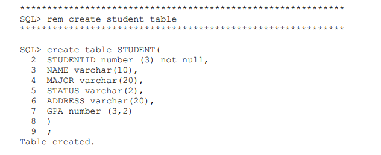
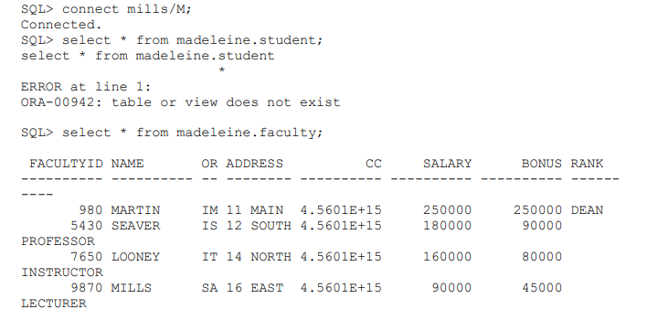

Assigning access controls for a table X to every user Y in a database Z can be a huge task. For example, in a database with 5 users and 15 tables, 5*15 means 75 times a database admin might have to use the command
SQL> grant select on X to Y;
Oracle roles provide an option for granting access to a table en masse without violating the principle of least privilege. Roles can be created, granted privileges, and then assigned to users as needed.
If you have tables and users already created, feel free to use those. If not, here is some reference code to get started.
Roles should be based on job description - for instance, an Human Resources manager might need access to employee tables but not customer data.
Double check that your roles work as intended. In this example, faculty members should only be able to see the faculty table and not the student table.
